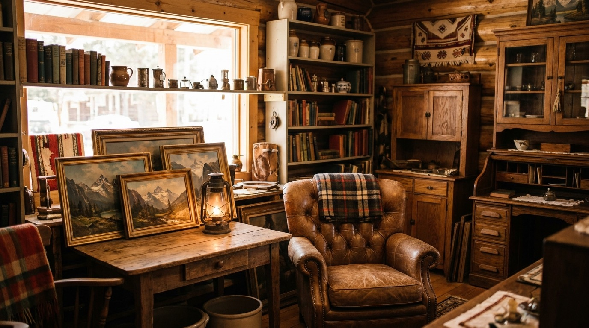

Antique furniture
Tables, dressers, chairs, and case pieces with real age and real wear. Solid wood, honest joints, the kind of furniture that already lived a life before yours.

Central Avenue, Downtown Whitefish
We're a small shop on Central Avenue in Whitefish. Vintage pieces and home accents that actually suit a mountain place, gathered one find at a time. Stop in before or after Glacier.
Preview imagery. We will swap in your real photos before launch.
What we carry
Inventory changes as pieces come and go, so this is the shape of what you'll usually find on the floor. If you're after something specific, give us a call and we'll tell you what's in.
Tables, dressers, chairs, and case pieces with real age and real wear. Solid wood, honest joints, the kind of furniture that already lived a life before yours.
Pieces that settle into a log wall or a lake place without trying too hard. Warm finishes, simple shapes, nothing fussy.
Smaller finds with character. The kind of thing you didn't know you wanted until it caught your eye on the shelf.
Something to bring home from Whitefish that isn't a fridge magnet. Good for a housewarming, a cabin, or yourself.
Older odds and ends for folks who collect. Stop in to see what's turned up lately, since it's rarely the same week to week.
Tell us what you're after. We'll let you know if we have it or keep an eye out.
Call 406-570-3166The shop
Whitefish sits right at the door to Glacier, and a lot of folks pass through Central Avenue on their way in or out. We're the antiques shop in the middle of it, full of furniture and decor that fits the cabins and lake houses around here.
Alicia runs the place, and the floor reflects that. Pieces are picked one at a time, not ordered by the pallet. So what's here this week may be gone the next, and something new will have taken its spot.
Up to now the easiest way to find us has been Facebook, which works fine until you're trying to remember where we are or when we're open. That's what this page is for. The address, the phone, and a sense of the shop before you walk in.
Plan your visitA look inside
These are preview images for now. We will swap in real photos of the shop and current pieces before launch.
First questions
We're at 325 Central Ave., Suite B, Whitefish, MT 59937, right downtown. Open directions in Google Maps.
The hours listed on this page are a placeholder for now. Please call ahead at 406-570-3166 to confirm we're open before you make the trip, and we'll get the real hours posted here soon.
We're in the downtown Whitefish core on Central Avenue, so it's street parking and the nearby public lots. It's a walkable stretch, so you can easily make us part of a downtown stop.
Usually, yes. Give us a call at 406-570-3166 and we'll do our best to set it aside while you make your way over.
Antiques move quickly and inventory changes often, so the safest bet is to call. We'll tell you straight whether it's still on the floor.
Visit us